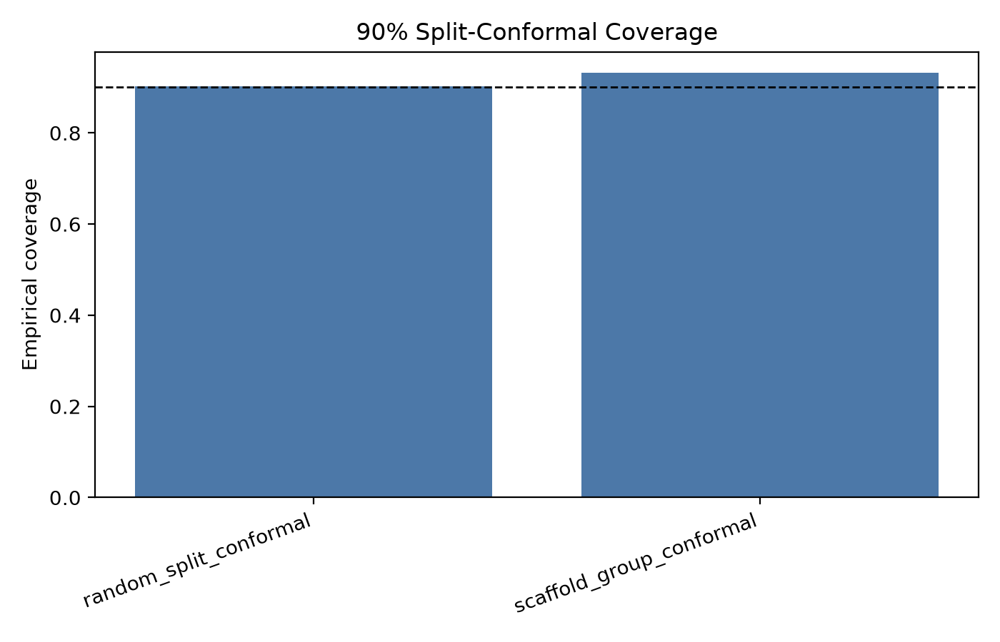
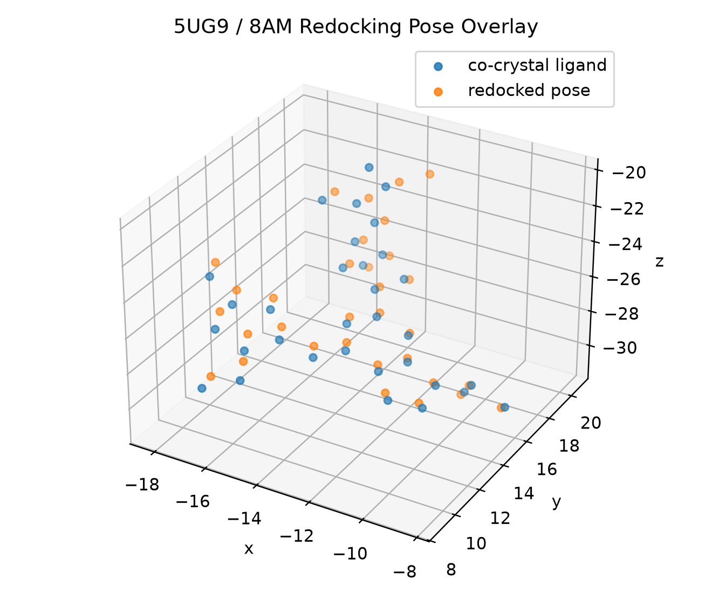

Flagship Project
EGFR CADD And QSAR Decision Workflow
Retrospective EGFR workflow from ChEMBL IC50 records with RDKit features, Morgan fingerprints, scaffold validation, uncertainty checks, triage, and 5UG9 redocking.
1. Overview
I built this as a complete EGFR cheminformatics workflow: curation, pIC50 modeling, validation-risk checks, applicability-domain analysis, uncertainty intervals, existing-molecule triage, SAR-style error analysis, active-learning simulation, a GPU GCN benchmark, and a small structure-based redocking check.
2. Dataset
- 26,600 raw ChEMBL EGFR IC50 rows.
- 10,834 clean molecule-level pIC50 rows.
- 10,593 model-ready molecules.
- EGFR target CHEMBL203.
3. Methods
RDKit descriptors, Morgan fingerprints, Random Forest baselines, scaffold validation, assay and document validation, conformal-style uncertainty checks, Tanimoto applicability-domain analysis, ADMET-style and model-risk triage, SAR-support error analysis, exploratory custom PyTorch GCN benchmarking, active-learning simulation over existing labels, and Vina redocking of 5UG9 with ligand 8AM.
4. Validation Results
| Check | Result |
|---|---|
| Morgan RF, random split | RMSE 0.712, R2 0.719 |
| Morgan RF, scaffold split | RMSE 0.871, R2 0.550 |
| Applicability-domain MAE | 0.513 high-similarity vs 0.957 low-similarity |
| Assay/document validation | completed with zero group overlap |
| GPU GCN scaffold benchmark | R2 0.198, below the Morgan RF baseline |
| 5UG9 redocking with ligand 8AM | -9.471 kcal/mol, 0.968 A RMSD |
5. Figures



6. Limitations
- Retrospective public/project record benchmark.
- Existing-molecule triage and model-risk analysis.
- ADMET-style triage uses simple drug-likeness and model-risk proxy rules.
- Redocking is a retrospective pose-recovery check.
- Prospective experimental validation remains future work.
7. Reproducibility
The standalone repository keeps the source, reports, metrics, figures, tests, and structure evidence. Raw ChEMBL-derived tables are local/regenerable artifacts.